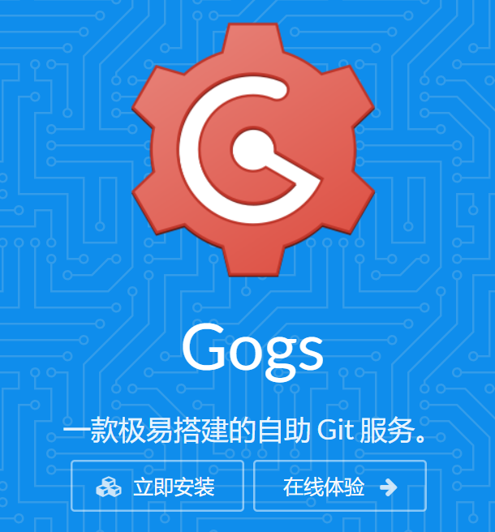
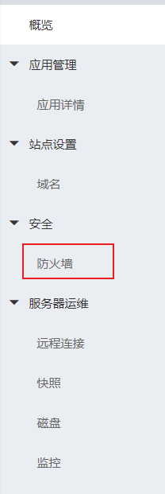
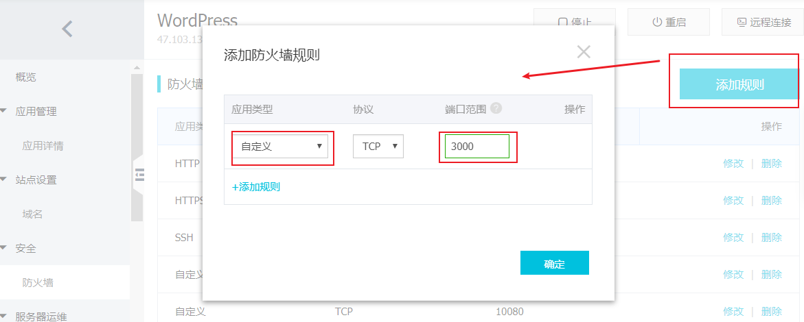
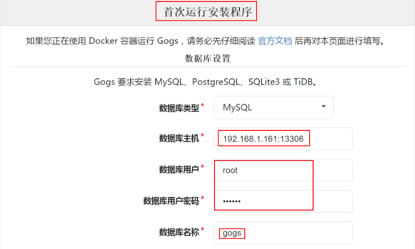
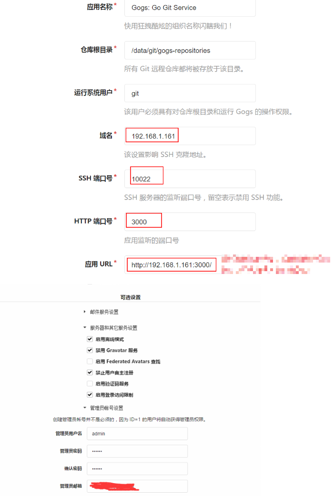
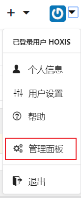

原文连接:https://www.cnblogs.com/hoxis/p/11462959.html
本来想在 Github 上建一个私仓，但是发现只能设置 3 个贡献者。
国内的码云也只能设置 5 个。
无意间看到了使用 gogs 可以搭建私服，正好手头有空闲的服务器，于是开干！

1、安装 git
yum install git2、安装MySQL
安装过程省略。
安装后登录 MySQL 进行如下配置：
create database gogs default character set utf8mb4 collate utf8mb4_unicode_ci;
# 这里我新建了一个用户用来访问gogs数据库
CREATE USER 'pig'@'%' IDENTIFIED BY 'xxxx';
GRANT ALL ON gogs.* TO 'pig'@'%';3、安装gogs
3.1 创建git用户
建议使用 git 用户，因为 gogs 配置文件默认使用的 git 用户。
useradd git
passwd git设置密码3.2 下载解压gogs
su git
cd
wget https://dl.gogs.io/0.11.29/linux_amd64.zip
# unzip 命令不可用的话需先安装
unzip linux_amd64.zip3.3 配置gogs
vim /home/git/gogs/scripts/init/debian/gogs
PATH=/sbin:/usr/sbin:/bin:/usr/bin
DESC="GoGs Git Service"
NAME=gogs
SERVICEVERBOSE=yes
PIDFILE=/var/run/$NAME.pid
SCRIPTNAME=/etc/init.d/$NAME
WORKINGDIR=/home/git/gogs #根据自己的目录修改
DAEMON=$WORKINGDIR/$NAME
DAEMON_ARGS="web"
USER=git #修改对应用户3.4 切回root，拷贝文件和服务
#拷贝到init.d下
cp /home/git/gogs/scripts/init/debian/gogs /etc/init.d/
#添加可执行权限
chmod +x /etc/init.d/gogs
#拷贝service
cp /home/git/gogs/scripts/systemd/gogs.service /etc/systemd/system/3.5 启动
systemctl start gogs.service 4、配置 gogs
此时，使用 ip:3000 就可以访问了
P.S. 阿里云的坑
阿里云的主机默认是无法访问 3000 端口的，解决方法
① 登录到阿里云控制台，进入到自己的云主机管理页面
② 点击『防火墙』

③ 添加 3000 端口的访问规则

确定，然后就可以继续访问之前的页面了。
第一次访问 Gogs，浏览器进入安装页面，如图所示填写字段


点击 install gogs，安装成功以后会直接进入 gogs 首页，在这里可以注册或者登录，完全像是一个正常的网站。
若在安装页面没有配置管理员，那么第一个注册的用户默认自动变成管理员，之后注册的用户都是普通用户。
配置文件详解
配置文件位于：
/home/git/gogs/custom/conf/app.ini
其中参数的详细解释可以看官网：https://gogs.io/docs/advanced/configuration_cheat_sheet
禁止用户注册
为了系统安全性，考虑禁止用户注册，只能由管理员创建帐号。
将参数 DISABLE_REGISTRATION 设置为 true。
DISABLE_REGISTRATION = true此时需要在页面进行创建账号：


至此，基于 gogs 的 Git 私仓搭建基本完毕。
参考：
https://www.jianshu.com/p/63206dad0afa
https://blog.csdn.net/qq_22638399/article/details/80658196
https://zhuanlan.zhihu.com/p/30798837
https://www.jianshu.com/p/28e8aa8f9ec4